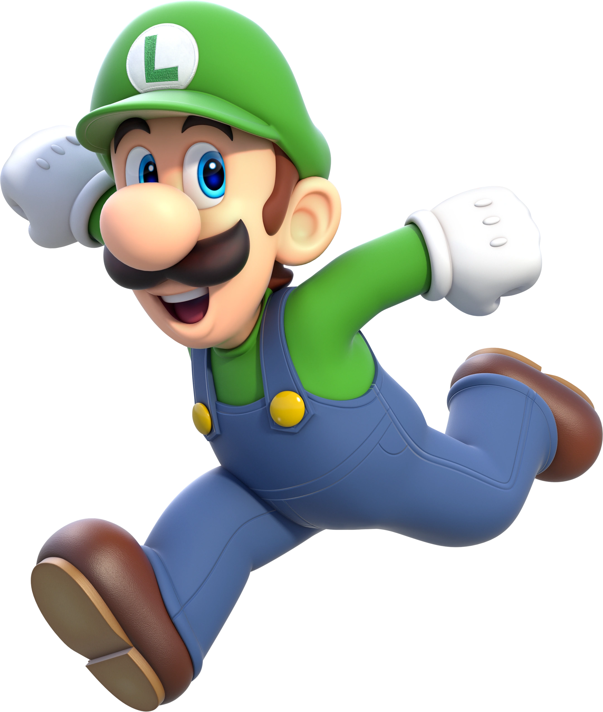

Luigi

- Irmão gêmeo mais novo do Mario.
- Mora no Reino dos Cogumelos com o Mario.
- Luigi é um homem desajeitado, autoconsciente, tímida e também possui muitos medos, principalmente de fantasmas.
- Além de acompanhar seu irmão nas aventuras dele, também possui suas próprias aventuras
- Sua aventura própria e principal é Luigi's Mansion, na qual Luigi precisa superar seu medo de fantasmas e salvar Mario e seus outros amigos, os quais são sequestrados pelo King Boo, o rei dos fantasmas e seu arquiinimigo.